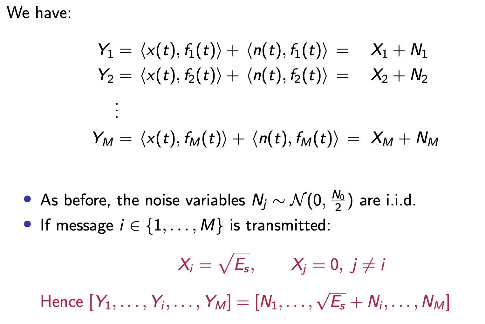

Data Transmission Notes
Introduction
This course is about the fundamental principles of designing communication systems. A more realistic (but still simplified) picture of a source-destination link is:
We will
- Focus mostly on the physical layer (transmission techniques)
- The last three lectures will focus on network algorithms for routing and congestion control
Outline:
- Fundamentals of modulation & demodulation for baseband and passband channels (7L, Dr Venkataramanan)
- Advanced concepts in modulation (Equalization, OFDM) (3L, Dr Venkataramanan)
- Error-correction and convolutional coding (3L, Dr Jossy Sayir)
- Network-layer algorithms for routing and congestion control (3L, Dr Jossy Sayir)
The Physical Layer

Transmitter does two things:
- Coding: Adding redundancy to the data bits to protect against noise
- Modulation: Transforming the coded bits into waveforms
The Signal Space
Below is the overall picture of a standard communication process:
bits $b$ -[mapping]-> input waveform $x(t)$ -[channel]-> received waveform $y(t)$ -[decode]-> received bit $\hat b$
The signal space is an elegant way to represent time-dependent waveform ** $x(t),y(t)$ using **projection efficients ${x_i},{y_i}$ , given an orthonormal basis.
Mapping bits to waveforms
Given data bits, we typically map the $m$ bits using $M=2^m$ waveforms as above. We could alternatively use other mappings like:
Vector Spaces
A vector space $\mathcal{V}$ is a set of elements (called “vectors”) that is closed under addition and scaler multiplication.
A set of linearly independent vectors is called a basis of the vector space $\mathcal{V}$, if $v\in\mathcal{V}$ can be expressed as a linear combination of the form
$$v = a_1v_1 + a_2v_2 + … + a_kv_k$$
for some scaler $a_1,…,a_k$
Let $\mathcal{L}_2$ be the set of complex-valued signals (functions) $x(t)$ with finite energy, i.e.,
$$\int_{-\infty}^\infty|x(t)|^2dt < \infty$$
It can be shown that $\mathcal{L}_2$ is a vector space. The inner product this space can be defined as follows. For $x(\cdot),y(\cdot)\in\mathcal{L}_2$,
$$<x,y> = \int_{-\infty}^\infty x(t)y^*(t)dt$$
the norm of a signal is the square-root of its energy:
$$||x||=\sqrt{<x,x>}= [ \int_{-\infty}^\infty |x(t)|^2dt]^{1/2}$$
Orthonormal Basis in $\mathcal{L_2}$
For any vector space $\mathcal{L}\subset\mathcal{L_2}$, the set of functions ${f_i(\cdot),i=1,2,…}$ is called an orthonormal basis for $\mathcal{L}$ if
Every $x(\cdot)\in\mathcal{L}$ can be expressed as
$$x(t)=\sum_i x_if_i(t)$$
for some scaler $x_1,x_2,…$ and
The functions ${f_i(\cdot),i=1,2,…}$ are orthonormal. That is,
$$<f_l,f_m> = \int f_l(t)f^*_m(t)=1$$
if and only if $l=m$, and equal $0$ otherwise
If we fix an orthonormal basis for $\mathcal{L}$, we can treat functions in $\mathcal{L}$ just like vectors in Euclidean space. I.e.,
$$x(t) \leftrightarrow (x_1,x_2,…,x_k)$$
Channel Model
Channels are often modelled as linear time-invariant systems with additive noise. With such model, the channel output $y(t)$ generated from input $x(t)$ is given as $y(t) = h(t)\star x(t)+n(t)$. We can use the additive noise model for some channels but not all, depending on the channel specification.
In frequency domain:
$$Y(f) = H(f)X(f)+N(f)$$
If our input signal $x(t)$ is bandlimited to $[-W_0, W_0]$, where $|H(f)|$ is constant, then $y(t)=c x(t-\tau)+n(t)$
$y(t)$ is found by inverse frequency domain $Y(f)$
We can compensate for the constant channel gain $c$ and the constant delay $\tau$ at the receiver, so the channel is effectively
$$y(t) =x(t)+n(t)$$
But this is not a suitable model if $x(t)$ now has larger bandwidth spanning $[-W_1,W_1]$, in which case we need to understand how the channel filters the input signal. This is relevant when the telephone wire is used for DSL broadband communication.
Passband Channel Model
Here the signal is restricted to have frequency components in the band$ [fc +W,fc −W]$,where$ fc$ is a carrier frequency( typically $fc ≫W$ ). As in baseband, there could be two scenarios in a passband channel.
If $|H (f )|$ is constant throughout the band and delay is also a constant $τ$ , then an additive noise model $y(t) = x(t) + n(t)$ can be used.
However, in mobile wireless communication, there are typically multiple signal paths from Tx to Rx. Such cases are not suitable for additive noise model
Noise Model
$$y(t) = h(t)\star x(t)+n(t)$$
$n(t)$ is thermal noise at the Rx, and is inevitable for all receivers.
We can model $n(t)$ as a Gaussian white noise process: For each $t$, $n(t)$ is Gaussian with zero mean and autocorrelation function:
$$\mathbb{E}[n(t)n(t+\tau)]=\frac{N_0}{2}\delta(\tau)$$
We note that the power spectual density (PSD or power spectrum) is $S_n(f)=\frac{N_0}{2}$, which has infinite power. But this doesn’t concern us because the transimitted sigal $x(t)$ is always bandlimited, giving finite energy.
Signal Detection in White Gaussian Noise
Set up:
- Signal set consists of $M$ waveforms ${s_1(t),…,s_M(t)}$
- We transmit one of $M$ messages with $x_i=s_i(t)$
- ${\phi_1(t),…,\phi_K(t)}$ is an orthonormal basis for the signal set.
- We wish to detect transmitted message from $y(t)=x(t)+n(t)$
Hence each signal is equivalent to a $K$-dimensional vector.
$$s_i(t) \leftrightarrow s_i=[s_{i,1},…,s_{i,K}]$$
Where the coefficents $s_{i,m} = \int s_i(t)\phi_m^*(t)dt$

We didn’t lose any useful information by projecting the signal onto signal space
Projection coefficients of white noise
Let ${n_m}_{m\in\mathbb{Z}}$ be the projection coefficient of white noise. Then ${n_m}_{m\in\mathbb{Z}}$ are i.i.d. Gaussian with zero mean and variance $N_0/2$. See prove below:
Optimal Detection
The optimal detection rule that maximizes the probability of detection error is the Maximum a posteriori probability rule (MAP)
$$\hat x = \arg\max_{s_i\in\mathcal{S}}P(x=s_i)f(r|x=s_i)$$
The optimallity of MAP can be shown as below:
Notably, if the prior distribution on the signal vector is uniform, than the MAP rules decays to the Maximum Likelihood (ML) estimator.
ML Detection in AWGN
For additive white noise and uniform prior on signal vector, the optimal detection rule is simply:
$$\hat x^{ML} = \arg\min_{s_i\in\mathcal{S}}||r-s_i||^2$$
which is the intuitive “minimum distance” decoding.
MAP detection in AWGN
Suppose the prior probability of the signal vectors are $P(x=s_i)=p_i$, the MAP rule is:
Baseband Transmission using PAM
Pulse-amplitude modulation (PAM), is a form of signal modulation where the message information is encoded in the amplitude of a series of signal pulses. It is an analog pulse modulation scheme in which the amplitudes of a train of carrier pulses are varied according to the sample value of the message signal. Demodulation is performed by detecting the amplitude level of the carrier at every single period.
To specify a PAM scheme, we need to:
- Select the symbol constellation. For example ${-3A, -A, A, 3A}$ map the transmitted bits to the symbol as $00\rightarrow -3A$ etc. Once we fix the constellation, a sequence of bits can be uniquely mapped to constellation symbols.
- We then select the pulse waveform denoted by $p(t)$, whose amplitude is going to be modulated. The baseband signal is given by $x(t)=\sum_mX_mp(t-mT)$. where $T$ is called the symbol time of the pulse.
The transmission rate is $1/T$symbols/sec or $\log_2(M)/T$ bits/second, where $M$ is the constellation’s size.
Desirable Properties of the Pulse Shape $p(t)$
- We want $p(t)$ to decay quickly in time:
since symbol $X_m$ is carried by $p(t − mT)$, its effect should not start much before $t = mT$ or last much beyond $t = (m + 1)T$ - We want $p(t)$ to be band-limited to $[−W , W ]$.
- The shifted pulses ${p(t-mT)}_{m\in\mathcal{Z}}$ should form an orthonormal basis
Time Decay and Bandwidth
There is a tradeoff between time decay and bandwidth, which is best illustrated by the comparison between rect and sinc function.
Orthonormality
By fixing a basis we can then represent the time signal in signal space by projecting $y(t)$ onto each of the orthonormal basis functions. Now we can build the optimal receiver using the minimum distance rule etc.
We can build a bank of $K$ “correlators”, which compute the inner products with the K pulse shifts:
But this implementation is not practical since we typically want to transmit a large amount of data. So $K$ can be very large.
Matched Filter Implementation
The matched filter is just a construct to project the time signal onto signal space (i.e., getting $X_k$ ). Let the filter impulse response be $q(t) = p(-t)$
Addition note on interpreting convolutional integral:
Drawbacks of PAM
So far the signal is baseband, in order to transmit it we will want to “up-convert” it with a high frequency carrier wave at $f_c$. Notice that because our signal $X_k$ and pulse $p(t)$ are real, the Fourier transfrom is a even function. This comes from $X_b(-f) = X_b^*(f)$ for real-valued functions.
The Nyquist Pulse Criterion
In communications, the Nyquist ISI criterion describes the conditions which, when satisfied by a communication channel (including responses of transmit and receive filters), result in no intersymbol interference or ISI. It provides a method for constructing band-limited functions to overcome the effects of intersymbol interference.
We have the following setup:
The matched filter is just a special case when $q(t)=p(-t)$. We will look at how to jointly select $p(t)$ and $q(t)$ such that $r(mT)=X_m$. We denote $g(t) = p(t)\star q(t)$ as the effective pulse. Then we can write $r(t)=\sum_kX_kg(t-kT)$
We want $r(mT)=X_m$ for all integer $m$, which is the ideal case when we have no inter-symbol interference (ISI). The Nyquist Pulse Criterion states the frequency domain condition for $g(t)$ in order to have no inter-symbol interference.
The Nyquist Pulse Criterion is $\sum_{n=-\infty}^\infty G(f-\frac{n}{T}) = T$, which intuitively is frequency-shifted replicas of $G(f)$ must add up to a constant value.
Implication of Nyquist pulse criterion: The Nyquist pulse criterion implies that in order to have no ISI, $G(f)$ must have bandwidth at least $1/(2T)$. Otherwise there will be a “gap” in the summation of replicas and hence will not add to a constant value.
Quadrature Amplitude Modulation (QAM)
In Quadrature Amplitude Modulation (QAM), we allow our symbol $X_k$ to be complex-valued. This is bandwidth efficient because now our baseband frequency spectrum is not even. However, the signal we transmit must be real, so we generate the passband QAM by taking the real part:
$$x(t)= \text{Re}(\sqrt{2}x_b(t)e^{j2\pi f_c t})$$
The $\sqrt 2$ makes the carrier unit power
What this essentially means that we are using two carriers with one lagging $180\deg$ to another (sine and cosine).
The cosine carrier $\cos(2\pi f_ct)$ is called the in-phase component and the sinusoid carrier $\sin(2\pi f_ct)$ the quadrature component. For this reason, QAM is also called I-Q modulation
How to obtain the passband transfrom?
Some typical QAM constellations include Phase Shift Keying (PSA), 16-QAM etc. In PSK, the magnitude of $X_k$ is constant, and the information is in the phase of the symbol.
Orthogonality
We can prove that the pulse-carrier product forms orthonormal basis, and hence we can use the idea of signal space (projection) to deal with optimal decoding. To show this, we need the Parserval’s theorem:
Parserval Theorem: $\int_{-\infty}^\infty x(t)y(t)dt = \int_{-\infty}^{\infty}X(f)Y(f)^*df$
Receiver
We can efficiently implement the signal space demodulator (demodulation + signal space projection) by carrier multiplication + low-pass filter followed by matched filter
To see why this is valid, note that:
We therefore can reduce the problem to PAM projection with carrier multiplication and low-pass filter. Here the matched filter uses the orthogonality of the pulse waveform.
Note that the multiplication + low-pass filter + matched filter is just an efficient implementation of the optimal signal space receiver. A bank of correlators (as in PAM) is a possible but unpractical alternative.
Error Probability Analysis
To analyse the error probability of PSK, we need to use the rotation invariance of zero-mean Gaussian noise vector. Specifically:
This essentailly tells us the distribution is invariant to our choice of coordinates rotations. So we can choose the most convenient coordinate (usually with axis normal to the decision bounday) to compute the error probability. Below is an example:
Frequency Shift Keying (FSK)
In Frequency Shift Keying (FSK), the information modulates the frequency of the carrier.
Note that $\Delta f$ is related to the tranmission period $T$ by $\Delta f = \frac{1}{2T}$.
Demodulation and Detection for M-ary FSK
The waveforms ${f_1(t), f_2(t),…f_M(t)}$ are orthonormal over each symbol period, the demodulator computes their corresponding projection $Y_i = <y(t), f_i(t)>$.

It should be obvious that the optimal detection rule is given by $\hat m=\arg\max_{1\leq i\leq M}y_i$
Probability of Detection Error and Bandwidth Efficiency
An error occurs if $y_1$ is not the maximum in the signal space vector. Suppose we transmit $x_1$
The bandwidth of FSK is given by $\frac{M-1}{2T}$. The bandwidth efficiency (symbol rate/freq) is given by $\frac{2\log_2M}{M-1}$. It decreases as $M$ increases. This is due to the fact that
We note that the bandwidth efficiency (symbol/Hz) for FSK decreases as $M$ gets larger, but its error probability decreases if $E_b/N_0 > 2\ln2$. For QAM, the bandwidth efficiency $\frac{\log_2M/T_s}{2/T_s}$ increases but the probability of error increases. There is a tradeoff between bandwidth efficiency and detection error.
Channel Equalisation
So far we have considered baseband/passband channels whose frequency response $H(f)$ was flat throughout the transmission frequency band. This meant that (after compensating for attenuation and delay), the effective channel is an AWGN channel.
However in many applications, the channel spectrum is not flat throughout the transmission band. For example, the frequency response of a DSL cable might look like
Also the mobile wireless channel is a multi-path channel, we can model it with delays and attenuations
In general, we will want to model the unflatness of the channel by its impulse response $h(t)$, the received signal thus becomes:
$$y(t) = \int h(t)x(t-u)du + n(t)$$
As compared to the AWGN model of $y(t) = x(t) + n(t)$
A channel frequency response $H(f)$ that is not flat in the transmission band is called frequency-selective or dispersive
The effective pulse $g(t)$ is now $p(t)\star h(t) \star q(t)$. In the absence of noise, our received sampled signal is given by $r(mT) = \sum_k X_k g((m-k)T)$. We can denote $r_m = r(mT), g_m = g(mT)$, so that $r_m = \sum_l g_l X_{m-l}$, or $r(k) = g(k)\star X(k)$
Relation with Nyquist Pulse Criterion: If $g_m$ is a digital delta (pulse) then it must satisfy the Nyquist Pulse Criterion. It is a special case where the channel is “perfect”.
In general the output will have ISI $g(k)\neq0\text{ for } k\neq0$, the output is effective the filtered symbols. Channel equalisation is trying to reverse that filter by passing $r_m$ through another filter to recover the original symbols.
${r_m}$ is effectively ${X_m}$ passed through a filter ${g_m}$, and we wish to reverse that filter. This is called channel equalisation.
Definition from Wikipedia: In telecommunication, equalization is the reversal of distortion incurred by a signal transmitted through a channel. Equalizers are used to render the frequency response—for instance of a telephone line—flat from end-to-end. When a channel has been equalized the frequency domain attributes of the signal at the input are faithfully reproduced at the output. Telephones, DSL lines and television cables use equalizers to prepare data signals for transmission.
Zero-Forcing Equaliser
After a Z-transform, we have $R(z) = G(z)X(z)$. Now we wish to have $Y(z)=H(z)R(z)$ and $Y(z)$ is our estimated transmitted symbol. One obvious way is to let $H(z) = G(z)^{-1}$ so that we recover exactly $Y(z)=X(z)$. This is called the zero-forcing equaliser.
Why Z-transform? Note that the channel is just a digial filter. Z-transform is the easiest way to solve for the output given the input and the filter.
It is called Zero-Forcing because it completely eliminates ISI.
In general, the zero forcing equaliser is given by:
$H_E(z)=\frac{1}{\sum_l^Lg_lz^{-l}} = h_0 + h_1z^-1 + …$
We note that although the channel impulse $g_k$ is finite, the equaliser is a IIR filter and needs to be implemented using feedback. One way to do it is given below:
We note that IIR filter can be problematic in stability and numerical stability.
Alternatively, we can use a FIR filter (truncated filter) to implement the ZF equaliser. There will be some ISI and the interference decreases as we increase the order of our filter.
A K+1 taps filter has impulse response $[h_0, h_1,…,h_K]$
Disadvantages of the Zero-Forcing Filter
The noise is also passed through the filter, and their variance is amplified. This is called noise enhancement and often it will destroy the Signal to Noise Ratio (SNR).
For this reason, ZF equaliser is of no practical use.
MMSE Equaliser
The Minimum Mean Square Error (MMSE) Equaliser explicitly tries to minimise the expected squared error between $X_m$ and $\hat X_m$
Note that the equaliser coefficent $h_l = c_{K-l}$
We can derive the MMSE equaliser as follows:
Orthogonal Frequency Division Multiplexing (OFDM)
We transmit $N+L$ symbols as a block in $(N+L)T_s$ time. There are $L$ cyclic symbols and $N$ useful symbols. $L$ is the number of non-zero entries of the effective filter $g[k]$, and is usually determined by the channel.
Bandwidth: $1/T_s$
Sub-band interval: $1/(NT_s)$
Symbol rate: $\frac{N}{(N+L)T_s}$
OFDM Transmitter
Below is a block diagram for OFDM transmitter:
OFDM Parameters
The key parameters of OFDM transmission scheme is summarized below, including number of subcarriers, bandwidth, impulse response length, symbol transmission period, batch transmission period, guard interval duration etc.
Convolutional Code
In convolutional code, a stream of input bits is transformed into a stream of code bits using a shift register (filter).
Representations
Usually we are only interested in $k=1$.
State Diagram
We may also represent convolutional code using state diagrams as in a finite state machine. For a code length of $L$ we will have $2^{L-1}$ states. The output during the transition (Mealy Machine) is the code bits. For example:
Trellis Diagram
The Trellis diagram is drawn by unravelling the state diagrams, with every possible transition at each time step. For example:
We use the convention that solid line - represents an input $0$, and dotted line — represents an input $1$
We can see how the Trellis diagram include every possible transitions. It is very helpful in decoding convolutional code.
Viterbi Algorithm
Dynamic Programming (DP) is used to decode convolutional codes, so that we don’t need to iterate over all possible routes. Instead, for a convolutional code with $n$ stages, we only need to remember $n$ surviving routes and $n$ values for each state node. For details, checkout this handout.
Free Distance
Convolutional codes are linear code, which means we can find the maximum number of error bit for which the code can correct itself by looking at $\lfloor (d_{min}-1)/2 \rfloor$, where $d_{min}$ is the minimum hamming distance of any codeword excerpt the all-zero code. However, because the length of convolutional code is unlimited (streaming code), $d_{min}$ is not well defined (you will need to specify a length). Hence we use the free distance $d_{free}$ to characterize convolutional codes.
The easiest way to find the free distance $d_{free}$ is through the transfer function.
Note that if we assume no burst of errors, the correcting capacity of a convolutional code is given by $\lfloor (d_{free}-1)/2 \rfloor$
Transfer function
Computing and Interpreting the Transfer Function
From the transfer function we can obtain the free distance. By expanding the transfer function we actually obtain the whole spectrum of error sequences.
The extended transfer function define the following symbols:
- $D$: for each 1 in the output, multiply $D$
- $J$: for each branch, multiply $J$
- $N$: multiplied to each branch corresponds to an input of 1
Catestrophic Encoder
A convolutional encoder is catastrophic if there exists two (arbitrarily long) code sequences which differ only in a small number of bits, but the corresponding two input sequences differ in an arbitrarily large number of bits. With such encoder, when one of these code sequences is transmitted a small number of channel errors can lead to an arbitrarily large number of errors in the (predicted) input sequence.
Below is a theorem which tests whether the encoder is catestrophic:
TCP Protocol
Network has a layered structure as follows:
- Phyical layer: bits over channel
- Link layer: reliable tx of frames
- Network layer: data transmitted in packets
- Transport layer: reliable end-to-end data transmission [congestion control, routing]
- Application layer: protocols like HTTP, FTP and SSH used by applications
The Transimission Control Protocol (TCP) is an end-to-end transport protocol. It specifies:
- How to establish connection
- Connection maintenance
- Reliability
- Congestion Control
- Flow Control
- Sequencing
- Connection termination
TCP-Reno
TCP-Reno is the algorithm used to regulate network traffic in order to avoid congestion collapse. The ground rules are:
- The receiver returns
ackupon reception of each packet - The transmitter keeps a window of variable size $W$. In the window are packets that have been sent but not
acked. - Each time the transmitter receives an
ack, it shifts the window by $1$ - The transmitter take the emprical mean and deviation of round-trip time (RTT) to estimate timeout.
The algorihm is divided into two phases: the Slow Start phase (SS) and Congestion Avoidance (CA) phase
Slow Start Phase (SS)
Congestion Control Phase (CA)
We can use a continuous time model to calculate the transmission rate in steady state with error rate $q(t)$

Exceptions Handle
Fast Retransmit
Waiting for timeout to happen can be very long. So instead TCP uses three duplicate ack as the indicator of packet loss. TCP fast retransmit demonstrates it pretty well.
Fast Recovery
Long-term Data Rate
Dijkstra’s Algorithm
Dijkstra’s algorithm in 3 minutes — Review and example is a good video illustrating Dijkstra’s Algorithm.
Dijkstra’s Algorithm has time complexity $O(\log N\times N + L)$
Below is an example of executing Dijkstra’s Algorithm
Dijkstra’s algorithm works out the shortest path from A to all other reachable nodes
Bellman-Ford Algorithm
Bellman-Ford in 5 minutes - Step by step example provides a working example of executing the Bellman-Ford algorithm
Bellman Ford is an iterative dynamic programming algorithm to work the minimal distance from every source to every nodes. It only requires message passing between adjacent nodes so it is distributed in nature. The time complexity is $O(N\times L)$, where $N$ is the number of nodes and $L$ is the number of links. The time complexity is worse than Dijkstra’s algorithm but it is much more flexible.
Besides, Bellman Ford can handle negative costs which Dijkstra’s cannot
Jinghong Chen @2021